Solar thermal plants PS10 and PS20, in Spain (image
courtesy of Koza1983, Wikimedia Commons, 2007)
HOpS is a tool for simulating the optics of a field of heliostats. HOpS was developed as part of the RE<C Initiative at Google, focused on developing concentrated solar power.
A heliostat is an actuated reflector (either flat or concave) designed to reflect sunlight onto a target surface, which may itself be flat or curved. In the context of concentrating solar energy production, the target may be
HOpS computes the visibility relationships between optical elements including the sun, heliostats, and discretized segments of the target surface. It simulates passing "packets" of light between each of these elements in order to compute irradiance data for the heliostats and the target.
HOpS was written as part of a larger effort in renewable energy research and development that focused on concentrating solar thermal production of electricity.
Our goals included optical simulation of a heliostat field over the course of an entire year with ten-minute granularity. Existing heliostat simulation tools were difficult to adapt to our needs. Optics simulation tools generally fall into two categories: raytracers and analytic approximations. Raytracers are very accurate, but because they need to compute flux using a statistically significant sample of rays, they require a lot of computation to arrive at a result. Analytic approximations, such as DELSOL, are very fast but allow only limited configurability and accuracy.
HOpS falls somewhere between the two categories, but closer to the analytic end of the spectrum: It passes data representing packets of light from one optical element to another, allowing it to compute shadowing and blocking masks precisely as vector-based objects, without the need for casting millions of light rays as a raytracer would.
HOpS is intended for use by researchers or designers of heliostat fields. It allows
There are so many optical simulation tools, covering various domains, that it be fruitless to attempt a comprehensive list here. Below is a small selection of tools which are relevant to concentrating solar applications.
Raytracers:
Analytic approximations:
The RE<C project used HOpS to lay out potential heliostat fields for the technology we designed. Because our heliostats employ pitch-roll actuation kinematics rather than conventional azimuth-elevation, they exhibit different shadowing and blocking characteristics than conventional heliostats do. We used HOpS to model this effect by comparing azimuth-elevation heliostats to pitch-roll heliostats for several different field configurations.
With a little scripting, we also used HOpS to gauge the benefit of
allowing heliostats in a tesselated field with regularly-placed receivers to
switch their aim from one receiver to another to maximize total flux through
the receivers' apertures, rather than always aiming at the nearest receiver.
This strategy can provide increased power by balancing cosine loss
(inefficiency due to canted reflectors) against spillage (reflected flux lost
because it doesn't pass through a receiver's aperture and thus doesn't strike
the receiver). We accomplished this by running HOpS seven times on a hexagonal
field assumed to be the basic unit of tesselation. For each run we used a
different receiver position: the center of the hexagon and the centers of the
six adjacent hexagons. We used HOpS' --heliostat_flux_on_target
flag (see below) to measure the flux from each heliostat that reaches the
receiver (through its aperture) and the --disable_field_masking
flag in order to be agnostic regarding the exact placement of heliostats and
their shadowing and blocking. Then, for each heliostat at each time step, we
took the highest flux-on-target value for that heliostat amongst all seven
receivers, assigning that heliostat to that receiver for that time step.
For a field located at Barstow's latitude, with parallel edges separated by 120 meters and with one pair of edges aligned east-west, receiver apertures of diameter 1.5 meters, level with the horizon and 42 meters above the centers of the mirrors, allowing retargeting yields 13% more flux on target on the winter solstice, 7% more on an equinox, and 5% more on the summer solstice than having each heliostat tied to its single closest receiver.
Features that would be very nice to add to HOpS include:
src/receiver_surfaces.cc.HOpS is known to build on Ubuntu and Darwin. It depends on the following packages, which must be installed first:
It's best to install google-gflags before
google-glog, so that the google-glog library will be
built with support for command-line flags. (Otherwise, you'll have to set the
environment variable GLOG_logtostderr=1 in place of using the
the command-line flag --logtostderr discussed below.)
Once these are installed (and the protobuf compiler
protoc is in your PATH),
checkout the HOpS source code using the instructions
here.
Next, change to the resulting directory, then run
autoreconf --force --install --verbose ./configure
to construct a Makefile for your system. Then run
make hops
to build the hops executable, or
make check
to build the executable and build and run the unittests.
./hops [--logtostderr] \
--layout_file=... \
--start_time=... --end_time=... --time_step=... \
[--disable_field_masking] \
[--heliostat_aiming_error=...] \
[--heliostat_facets_per_side=...] \
[--heliostat_flux_in=...] \
{other output flags}
For example, to simulate sixty minutes in the life of the field in
src/examples/curved_receiver_oblique_layout, with receiver
irradiance output to my_receiver_irradiance and field efficiency
output to my_heliostat_efficiency, you might run something like
this:
./hops --logtostderr \ --layout_file=src/examples/curved_receiver_oblique_layout \ --start_time=1321395400 --end_time=1321399000 --time_step=60 \ --receiver_irradiance=my_receiver_irradiance \ --heliostat_efficiency=my_heliostat_efficiency
hops reads a field configuration from a text protocol buffer
in the format defined in src/field_layout.proto. The flag to
specify the file to load is --layout_file.
The basic elements of a field configuration file are as follows:
sun describes the location of the sun in the sky. It can be
either automatic, in which case you must use field_location
to specify the location of the field on Earth, or manual, in which case
you must specify a list of sun_config messages, each of
which gives the sun's position in the sky (as a vector in field
coordinates, of arbitrary magnitude) as a sun_vector message
and a corresponding direct normal insolation in watts per square
meter as a dni value. In the automatic case, the sun's
position is computed using NREL's SOLPOS library, and DNI is
calculated using extraterrestrial DNI from SOLPOS multiplied by a
clear-sky atmospheric attenuation factor given by Rozenberg's equation;
see src/sun_calculators.cc for more details.heliostat and heliostat_block are messages that
let you create individual heliostats or lattice-aligned blocks of
heliostats, respectively. In a heliostat message, you can
specify reflectivity, focal_length,
actuation kinematics (as DIRECT,
AZI_ELE, or PITCH_ROLL), and the shape of the
reflector (either as a rectangle with width and
height or as a sequence of vertex coordinate
pairs. A heliostat also needs a location and
an aim point in field coordinates. Its frame's
orientation can be changed (thus affecting its actuation kinematics)
using a frame_orientation message. A
heliostat_block message, instead of having a
location, takes parameters specifying the spacing and number
of heliostats in the x and y directions.receiver defines the type,
location, and orienatation (via the direction
field) of the field's receiver. type is a string specifying
which receiver shape from src/receiver_surfaces.cc to use;
at present this is "flat" for a square plate three meters on a side, or
"alec" for a curved surface (a quadratic surface of revolution used as
an early model by one of our team members) with a radius at its mouth of
1.68 meters. The parameter resolution specifies the number
of discrete elements in each of two axes into which to divide the
receiver surface for the simulation; for example, with
resolution set to 10, the receiver will be divided into 100
discrete elements. If you care only about properties of the field or
about flux delivered through the aperture, it's best to use the "flat"
receiver with resolution set to 1.aperture specifies the location and
radius of a circular aperture to be placed near the
receiver, along with an orientation specified by the normal
direction. (Actually, due to the fact that we model all shapes in HOpS
as polygons, the aperture is approximated by a regular icosagon.)
If no aperture message is specified, light from heliostats
may strike the receiver from any direction. Be aware when using a curved
receiver that, as an optimization, HOpS does not calculate blocking
between receiver elements. Thus, if you use a curved receiver without
also using an aperture to provide blocking, you may get incorrect
results.Reflector curvature is defined by the single parameter
focal_length. Reflectors are assumed to be ideal flat Fresnel
reflectors (by analogy with the Fresnel lens), rather than spherical or
parabolic. This approximation is valid as long as the size of a heliostat is
much smaller than the distance between the heliostat and the receiver.
The three systems of heliostat actuation kinematics are as follows:
DIRECT means that the reflector is tilted directly from
a horizontal orientation by the shortest path to the desired normal.AZI_ELE models a conventional heliostat with a vertical
azimuth axis and a horizontal elevation axis that rotates with
azimuth.PITCH_ROLL models the heliostats designed by the RE<C
team, which have a horizontal pitch axis and a roll axis that rotates
with pitch in the plane orthogonal to the pitch axis.Coordinates in a field configuration file may be expressed in any of the
following systems, which are defined in
math/coordinates3d.h:
CARTESIAN takes coordinates in (x, y, z) tuples.
The x-axis points east, the y-axis points north, and the z-axis points
up.CYLINDRICAL takes coordinates in (ρ, φ, z) tuples.
ρ is distance from the z-axis. φ is measured in radians from
the x-axis (east), increasing towards the y-axis (north).SPHERICAL takes coordinates in (r, θ, φ) tuples.
θ is inclination (or colatitude) meausured in radians. That is,
vectors with θ equal to π/2 lie in the x-y plane. φ is as
above.ASTRONOMICAL takes coordinates in (altitude, azimuth,
elevation) tuples. Altitude is vector magnitude, the same as r in
spherical coordinates. Azimuth is a compass bearing (measured in degrees
from the y-axis and increasing towards the x-axis). Elevation (sometimes
called latitude) is an angle measured in degrees from the x-y plane, with
positive values corresponding to the positive z-direction.src/examples contains the following example configuration
files:
curved_receiver_oblique_layout models a square field of
heliostats with azimuth-elevation kinematics and trapezoidal
reflectors, aimed at a curved receiver located south of the field
and having an aperture with a 1.68 meter radius.
The sun moves automatically, with the field
presumed to be located in Barstow, California.flat_receiver_overhead_layout models a square field
heliostats with pitch-roll kinematics and rectangular reflectors,
aimed at a flat plate receiver located 50 meters above the center of the
field, without any aperture between the heliostats and the receiver.
Again, the sun moves automatically, with the field presumed to be located
in Barstow, California.two_heliostats_layout models two heliostats with
differently-shaped reflectors, positioned underneath a flat plate
receiver. Two different locations of the sun in the sky are specified,
together with values of direct normal insolation in watts per square
meter.--logtostderr is recommended for visibility into what the
program is doing and its progress.
The flags --start_time, --end_time, and
--time_step govern time in the simulation. If the layout file
specifies an automatic sun, these times should be expressed in Unix time
(seconds since the epoch at 00:00:00 UTC on 1 January 1970). If the layout
file specifies manual sun positions,
just set --end_time to the index of the last position in the list
(that is, the length of the list minus 1) and leave --start_time
and --time_step at their defaults (of 0 and 1 respectively).
--disable_field_masking ignores all shadowing and blocking
effects within the field (but apertures still block). It can dramatically
increase the program's speed for a first-approximation simulation.
--heliostat_aiming_error is a value in radians, with default
zero. At each time step, each heliostat's aim is set to a direction differing
from the ideal aim by a random amount drawn from a two-dimensional normal
distribution with this value of standard deviation.
--heliostat_facets_per_side enables discrete convolution
of the mirror shape with the sun shape in order to produce a more
realistic reflection. The default value of 1 treats each heliostat as
a single infinitesimal facet producing a perfect reflection of the sun.
(It's infinitesimal only for the purpose of calculating the reflected image;
shadowing and blocking are always computed for the full area of the reflecting
surface.) Values of 4 or 5 have been found to produce fairly accurate images
for receiver resolutions of about 10 by 10.
The output of hops is saved to text files formatted
for plotting with the pm3d module in gnuplot.
Outputs are enabled, and their filenames specified, using command-line flags
to hops.
Each row of output has five columns, separated by spaces, with
" as a quote character: The timestamp, x and y coordinates for
plotting the results, the value being output, and a string describing the value
(which should be the same for each row but is repeated for convenience).
A single blank line separates blocks of data with constant y coordinate
(this is needed by pm3d), and two blank lines separate blocks
of data with constant time.
For heliostats' output, the x and y coordinates are each heliostat's x and y coordinates in the field.
--heliostat_flux_in outputs flux in watts incident on each
heliostat surface.
--heliostat_irradiance_in outputs irradiance in watts per
square meter incident on each heliostat surface.
--heliostat_shadowing outputs percent of light traveling
towards each heliostat shadowed by other heliostats.
--heliostat_blocking outputs the percent of light emitted by
each heliostat blocked by other optics (either heliostats or the aperture).
Note that this is not the conventional definition of blocking, which includes
only heliostats!
--heliostat_flux_on_target outputs the flux in watts from
each heliostat that strikes the receiver surface.
--heliostat_efficiency outputs the percent of flux incident
on each heliostat that that heliostat delivers to the receiver surface.
For receiver elements' output, the x and y coordinates are equal-area
projections defined in src/receiver_surfaces.cc.
--aperture_flux_spill outputs the flux in watts that passes
outside the aperture.
--receiver_flux outputs the flux in watts incident on each
element of the receiver surface.
--receiver_irradiance outputs the irradiance in watts per
square meter incident on each element of the receiver surface.
The script src/plot_results.sh can be used to turn
output files into heat maps. It requires gnuplot to be in
your PATH. Invoke it using:
src/plot_results.sh OUTPUT_FILENAME
The results will be saved to .png files with names formatted as
OUTPUT_FILENAME_TIMESTAMP.png.
If the output file to be plotted contains more than 5 time
steps and mencoder is in your PATH,
plot_results.sh will assemble the resulting plots into a .avi
movie file using mencoder.
Below are example plots of heliostat efficiency (percent
of flux incident on a heliostat actually delivered to the
receiver) and receiver irradiance for the configuration defined in
src/examples/curved_receiver_oblique_layout. The heliostat
efficiency plot is a heat map of the heliostat field itself; the receiver
is located south of the field at coordinates (0,0).

These plots were produced by the following invocation
of hops, with the resolution parameter in
src/examples/curved_receiver_oblique_layout changed from
10 to 60 to give a more detailed plot of the receiver:
./hops --layout_file=src/examples/curved_receiver_oblique_layout \ --start_time=1321570800 --end_time=1321570800 \ --receiver_irradiance=receiver_irradiance \ --heliostat_efficiency=heliostat_efficiency src/plot_results.sh receiver_irradiance src/plot_results.sh heliostat_efficiency
Note that the dates displayed above the plots are converted from the
presumed Unix timestamps in the data file output by hops. Thus,
in the case of a configuration file specifying manual sun positions, these
dates will be relative to the start of the Unix epoch and not otherwise
meaningful.
HOpS works by passing data structures representing packets of light
from one optical element to another. These IncidentLight
structures, defined in src/optic.h, record the intensity and
direction of the light, as well as a blocking mask and a const
pointer to the source object. The sun object illuminates each heliostat,
and each heliostat illuminates each element of the receiver that's visible
to it.
The advantages to this approach are that it is completely deterministic, and for some configurations it can be a great deal faster than ray tracing. The runtime scales with the product of the number of heliostat facets and the number of receiver elements, so for a detailed picture of a single heliostat's image or flux-through-aperture for a large field of heliostats, this approach can be ten to a hundred times faster than ray tracing.
Shadowing (masking of sunlight incident on a heliostat) and blocking
(masking of light reflected by a heliostat) are calculated deterministically,
with the resulting masks represented as Polygons objects (declared
in math/polygons.h).
Because the shadowing and blocking masks for a given reflector (or facet) are known exactly, we intersect them to compute the total blocking mask, avoiding double-counting and giving us a precise measure of shadowing and blocking for every heliostat.
The image produced by any reflective surface can be determined by integrating over the surface: Each infinitesimal reflective element produces a perfect image of the source, and the resulting image is therefore a convolution.
We can approximate this convolution operation by dividing a heliostat's
reflector into discrete facets, each of which is treated as a perfect
infinitesimal reflector. This is enabled using the
--heliostat_facets_per_side flag.
In our case, the source is always the sun, which we approximate as a regular dodecagon of the Sun's true size and distance from Earth, subtending an angular diameter of about half a degree or nine milliradians. For automatic sun positioning, the distance is determined exactly; for manual sun positioning it is assumed to be 1 AU.
For an in-depth look at the convolution, see the appendix.
The simulation operates on optical elements (the class Optic).
An Optic is a flat object with a polygonal shape (a
Polygon structure or Polygons object),
has a location and an orientation, and can receive packets of light
(IncidentLight structures).
Optic has four subclasses: Sun,
Heliostat, Aperture, and
ReceiverElement. Additionally, a Sun
object owns a SunCalculator object, which determines the
Sun's position in the sky either automatically (in the
case of the SOLPOS subclass) or manually (in the case of
the SunPositionList subclass). Each Heliostat
object owns a set of HeliostatFacet objects which represent
a division of the reflector surface into finitely many facets, allowing
the simulation to produce more accurate solar images through discrete
convolution. To see this effect in action, set up a field with just
one heliostat and compare the receiver_flux between the
default --heliostat_facets_per_side=1 and a more realistic
--heliostat_facets_per_side=5.
These Optic elements are owned by containers of class
OpticContainer.
OpticContainer has three subclasses: Sky,
Field, and Receiver.
OpticContainer objects are linked together
by OpticContainerConnection objects. An
OpticContainerConnection stores visibility information.
Suppose we have an OpticContainerConnection that connects
OpticContainer X to OpticContainer Y. For each
Optic pair (x, y), where x is in X and y is in Y, the
OpticContainerConnection stores a list of Optic
objects in X that are capable of blocking, and a list of Optic
objects in Y that are capable of shadowing, the path from x to y.
OpticContainerConnection is also the class responsible for
orchestrating the communication of IncidentLight structures
from one OpticContainer to another.
Here is a sketch of the relationships between these objects:

Solid arrows denote ownership. The dashed arrows represent the visibility
relationship between OpticContainer objects encapsulated in
the OpticContainerConnection objects.
Below is a partial class-level call graph for a Simulate()
step, illustrating the sequence of method calls. The Simulate()
method in the Simulation object first calls the
UpdateSelf() method in each of its OpticContainer
members, which in turn call UpdateSelf() on their
Optic members. These methods don't perform any optical
calculations; they simply clear the data the Optic objects stored
at the previous timestep and allow the Sun to move in the sky and
each Heliostat to reorient itself to stay on target. Then
Simulation calls the Simulate() method in each of its
OpticContainerConnection members. These objects recalculate their
cached visibility information if necessary, then pass light from each source
Optic to each destination Optic by calling
OutputIrradiance on a source Optic to calculate
output irradiance and store it in an IncidentLight
structure, followed by ReceiveIncidentLight on a destination
Optic.
OutputIrradiance in turn calls TransferIrradiance to
calculate the "transfer function" that converts each of an Optic
object's incoming IncidentLight packets into an irradiance value
for an outgoing IncidentLight packet. This is nonzero only
for Heliostat objects, which use this method to compute the
sun's reflected image and combine this with their reflectivity, shadowing,
and blocking to produce an "irradiance on target" value.
HOpS proved to be a very useful tool for the RE<C project. By scripting it to run on a thousand machines in parallel, we were able to run comparative simulations of many different field configurations very quickly.
For example, at one point we wanted to compare the performance of four
different field layouts with three different receiver heights, three different
aperture diameters, and three different magnitudes of heliostat aiming error,
or 108 combinations in all. We simulated sixty days of real insolation data at
5-minute granularity, with 8970 time steps for each run. We needed to know
only the values of flux through the aperture (--receiver_flux) and
flux spilled at the aperture (--aperture_flux_spill), and so we
were able to use a single-element receiver (resolution set to 1 in
the configuration files), allowing the simulation to run far faster than any
ray tracer could. Using one thousand machines, the whole experiment,
including plotting of the results, took less than two hours, or about 7.5
machine-seconds per time step. By comparison, the commercial ray tracer
LightTools, running on a modern desktop, takes about a minute per time step for
a similar simulation.
In testing HOpS during development, we compared its results to those
produced by LightTools. In our use cases, we found agreement to within one
part in a thousand with --heliostat_facets_per_side=5.
Due to its design, HOpS' runtime scales with the product of the total number of heliostat facets and the number of receiver elements. Thus, it may take a long time to produce a detailed receiver flux map for a large field of heliostats.
In this appendix, we explore in depth the issue of imaging the sun in a canted curved reflector. This will provide a useful background for understanding how heliostats focus light and the limitations of their performance, as well as the convolution that HOpS uses to produce reflected images of the sun.
The effect we describe here is usually termed astigmatism, not to be confused with coma, which is a next-order optical aberration which becomes important only for optical systems in which the focal length of the reflector (or lens) is comparable to its width.
Imagine an ideal mirror with focal length f, where f is much larger than the width of the mirror. This means that parallel normal incident rays reflect to meet at a point A a distance f from the mirror surface. This is illustrated by the blue rays in the following diagram. (We shall use Greek letters for angles, capital Roman letters for points, and lower-case Roman letters for lengths.)

Here the focal point is A, and the mirror is BC (drawn as a flat surface because the curvature is assumed small). Assume WLOG that the rays strike at the edges of the mirror, a distance
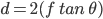apart.
But what if the rays are parallel to each other but not normal to the mirror? At what distance from the mirror do they intersect? Adding the new non-normal rays in red to the diagram above, we get:

Let the angle between the incident red rays and the vertical be α and the point of intersection of the reflected red rays be A′.
Let the angle between the left-hand reflected red ray and the line BC be
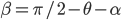.Likewise we have

for the right-hand reflected ray. Then the angle at A′ is
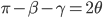,the same as the angle at A. Therefore the isosceles triangles ABC, A′B′C, and A′BC′ are all similar.
The distance from A′ to the mirror could be measured to one edge of the mirror or to the other, or to some point in between. Let g be the height of triangle A′B′C and h be the height of triangle A′BC′. Let f′ be the height of a triangle similar to these two triangles whose base passes through O; we will define this to be the distance we seek.
Annotating the diagram further:
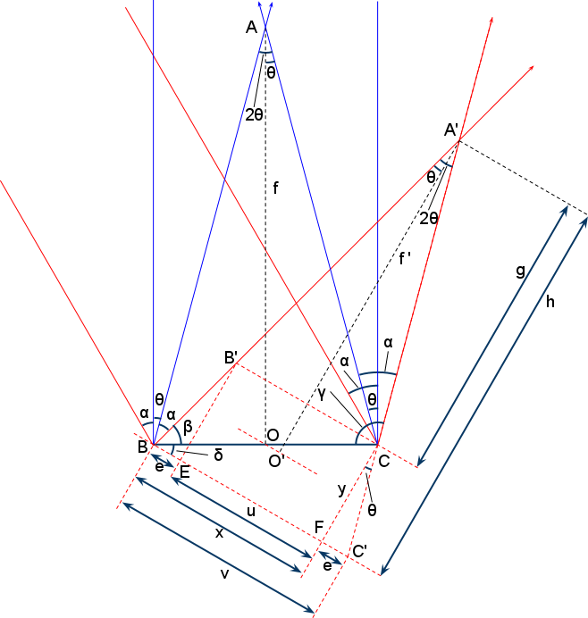Let u be the length of B′C (equal to EF), and let v be the length of BC′. Let δ be the angle CBC′. Since A′BC′ is similar to ABC, it is clear that
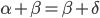and so
 .
.
Now we can calculate the length of the triangle bases B′C and BC′, and from there determine g and h.
Let
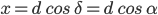be the length of BF and

be the length of FC (which is the same as EB′). Then using the triangle CFC′, we can calculate the length of FC′ (and BE) to be
 .
.
Now we know that
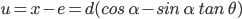and
.Therefore, by triangle similarity,

and
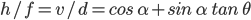.Since O is the midpoint of BC, OO′ is midway between B′C and BC′. Hence the distance A′O′ is the mean of g and h. That is,
 .
.
The above derivation works for two dimensions, with a one-dimensional mirror surface. In three dimensions, with a two-dimensional mirror surface, there is one direction in the mirror plane in which the incident rays are normal and a direction orthogonal to that one in which they aren't. Therefore there are two focal lengths at work: the ordinary focal length f, and the astigmatic focal length f′. In one direction, the rays focus at distance f, and in the other direction, they focus at distance f′.

The parallel incident rays in the discussions above may be considered as coming from a distant point source. The image of this point source formed at a distance x from the mirror is a diagonal linear transformation (that is, a scaling-and-squeezing) of the mirror surface, as depicted in the diagram below. (The dotted lines should be centered within the dashed quadrilaterals, but perspective drawing is hard.)

The scale factor along the normal direction is
 ,
,
and the scale factor along the astigmatic direction is
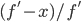.A negative value for a scale factor means that the image is flipped in that axis.
The image of a source of finite extent (the sun, for example) is the locus of the images of all the rays from the source; that is, a convolution of the above transformation of the mirror's shape with the source's shape.

The extent of this image in either direction is therefore the width of a point reflection of the source (ie. its angular width φ times the distance of the image from the mirror) plus the width of the image of the mirror under the above linear transformation.
In particular, if the mirror has width dn in the normal direction and width da in the astigmatic direction, then the extent of the image in the normal direction is
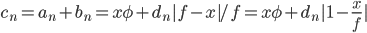,and the extent of the image in the astigmatic direction is
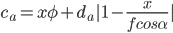.The minimum total image spread is the isotropic case cn = ca, or
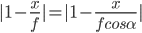,which gives
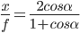and thus
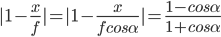.